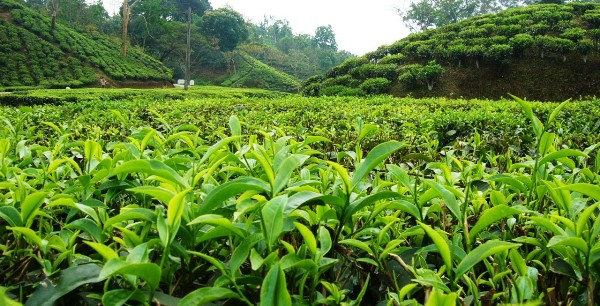
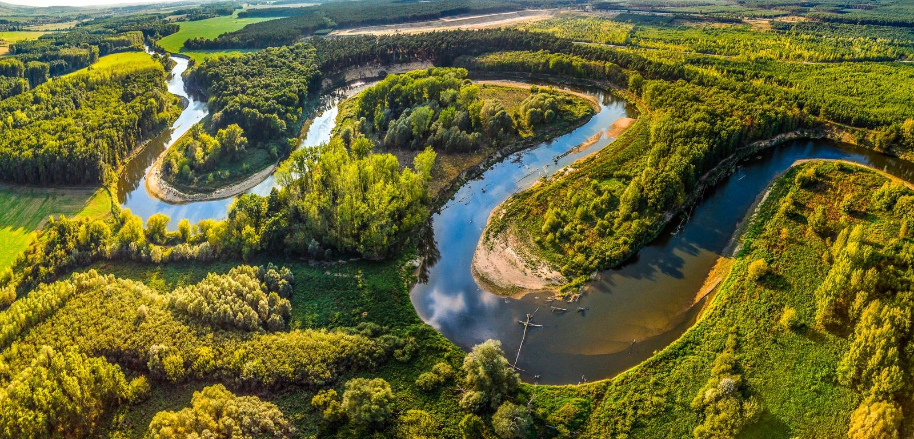
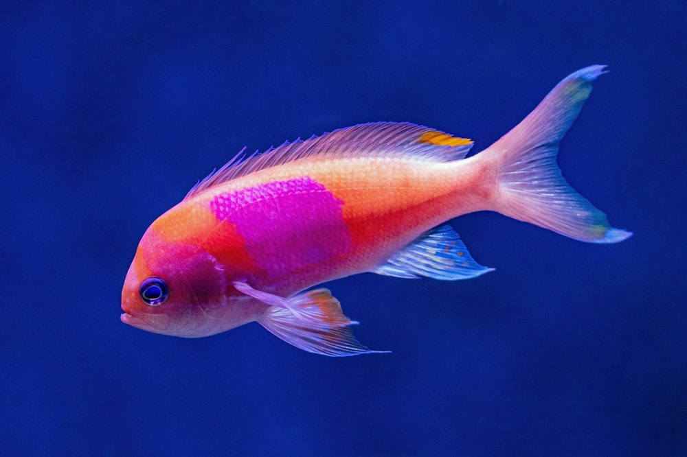

The region receives an annual average rainfall of 2000 mm accounting for about 10 percent of the country’s total precipitation. The soil of the region is acidic to strongly acidic in nature accounting 70 percent of the total geographical area Low soil pH is basically due to leaching of the bases under the influence of heavy precipitation. Soils are rich in organic matter. About 82 percent population depends on agriculture.
Both Arunachal Pradesh and Meghalaya are rich in Natural Resources in the form of-
- Forest
- Agriculture Land
- Rivers
- Medical Plants
- Aromatic Plants
- Fish Germplasm including Ornamental
Forest Resources

The region is rich in orchids, ferns, oaks (Quercusspp.), bamboos, rhododendrons (Rhododendron spp.), magnolias (Magnolia spp.), foliage plants etc. The region is rich in medicinal plants and many other rare and endangered taxa
The following figures highlight the biodiversity significance of the region:
- 51 Forest types are found in the region broadly classified into six major forest types viz., tropical moist deciduous forests, tropical semi evergreen forests, tropical wet evergreen forests, subtropical forests, temperate forests and alpine forests.
- These forests harbour 80, 00 out of 15,000 species of flowering plants.
There are very interesting areas in the region that are termed as ‘Isolation Belts’ that have led to the isolation of certain species.
Agriculture Land
Both states are one of the hotspot of mega biodiversity centre of the world which falls in between Eastern Himalayan belt and Indo-Burmese Region. The regions are rich both in terms of primary and secondary crop diversities. Some major crops are-
- Cereal
- Maize
- Barley
- Grain Legumes
- Oilseeds
- Vegetables
- Tuber Crops
- Spices
- Fruits
Rivers

The rivers of India play an important role in the lives of the Indian people. The river systems
provide irrigation, potable water, cheap transportation, electricity, as well as provide
livelihoods for a large number of people all over the country. This easily explains why nearly
all the major cities of India are located by the banks of river. The rivers also have an
important role in Hindu mythology and are considered holy by all Hindus in the country.
River which is flows in both regions is Brahmaputra.
The Brahmaputra originates in the Mansarovar lake, also the source of the Indus and the Satluj.
It is slightly longer than the Indus, but most of its course lies outside India. It flows
eastward, parallel to the Himalayas. Reaching Namcha Barwa (7757 m), it takes a U-turn around it
and enters India in Arunachal Pradesh and known as dihang. The undercutting done by this river
is of the order of 5500 metres. In India, it flows through Arunachal Pradesh and Assam, and is
joined by several tributaries.
Medicinal and Aromatic Plants
North-eastern region provides a varied eco-climate and perhaps due to this, a large number plant species and their diversities exist. Altitude wise the region can be classified in to four (4) zones i.e. Tropical, Sub-tropical. Temperate and Alpine, which are the habitats for occurrence and suitable for ex-situ cultivation practice.
- Plantagoerosa
- Adhatodavesica
- Andrographispaniculata
- Withaniasomnifera
- Vitextrifolia
Fish Germplasm including Ornamental
It is a multi-purpose water management system, which integrates land, water and farming system by protecting soil erosion, conserving water for irrigation and paddy-cum-fish culture. To prevent trashes of migration of fish, a semi-circular wooden/bamboo net is installed at the inlet to reduce beating action of flowing water regulating in soil erosion; wooden strikes of planks are put at the outlet.